Hello World Plugin
Start by creating a basic plugin and then
explore our comprehensive list of tutorials.
Start by creating a basic plugin and then
explore our comprehensive list of tutorials.
from st_hsdatalog.HSD_datatoolkit.HSD_DataToolkit_Pipeline import HSD_Plugin
class PluginClass(HSD_Plugin):
def __init__(self):
super().__init__()
print("HelloWorldPlugin has been initialized!")
def process(self, data):
print("HelloWorldPlugin process method called")
print(f"---> Received data from: {data.comp_name}")
print(f"-----> Data: {data.data}")
print(f"-----> Timestamp: {data.timestamp}")
return data
def create_plot_widget(self):
print("HelloWorldPlugin create_plot_widget method called")
DataToolkit is a Python framework designed to simplify the development of applications using data from STMicroelectronics sensors. It provides complete hardware abstraction, making it easier to handle real-time data from connected ST system solutions or stored datasets.
DataToolkit features a flexible plugin architecture, allowing easy extension of its functionalities. Its modular data processing pipeline lets you add plugins to customize and enhance data processing to meet specific requirements.
Whether you are:
you can now fully utilize Python with real-world data.
DataToolkit is built on top of ST High-Speed Datalog Python SDK
(HSD_PythonSDK)
and is designed to work with all STMicroelectronics platforms that support the FP-SNS-DATALOG2 function pack.
View the list of supported platforms here.
Follow these instructions to download the framework and set up your environment.
After setting up DataToolkit, you are ready to create your first plugin. Plugins allow you to extend the functionality of the framework to suit your specific needs.
A plugin is a modular component that allow to perform specific tasks, such as data processing, visualization or saving files extending the framework capabilities without modifying its core functionality. Please go here for a more detailed explanation.
To properly configure the data processing pipeline, you need to select the plugin files that will compose it. Once selected, live sensor data can flow through this pipeline allowing you to perform data processing and other tasks. For a detailed step-by-step guide, refer to the dedicated section here.
To get familiar with the framework, begin with the Hello World Plugin. This simple example will help you understand the basics and get started quickly.
To get started with DataToolkit, follow these steps:
C:\Python39).nano ~/.bash_profile or nano ~/.zshrc)./path/to/python with the path to your Python installation directory:
export PATH="/path/to/python:$PATH"source ~/.bash_profile or source ~/.zshrc to apply the changes.It is recommended* to use a clean virtual environment for configuration. Navigate to the HSDPython_SDK root directory, open a terminal, and run:
python -m venv .venvThis command will create a new directory named .venv in your project root. This directory will contain a clean Python environment with its own installation of Python and pip.
* Using a virtual environment is highly recommended because it allows you to create an isolated environment for your project. This isolation ensures that the dependencies and packages required for your project do not interfere with those of other projects or the system-wide Python installation. It helps in maintaining a clean and manageable development environment, avoiding potential conflicts between different package versions, and making it easier to reproduce and share your project setup with others.
On Windows:
.venv\Scripts\activateOn macOS and Linux:
source .venv/bin/activateRun the following command from the downloaded HSDPython_SDK root directory to install the SDK packages:
On Windows:
.\HSDPython_SDK_install.batOn macOS and Linux (once ensured the script has execution permission):
./HSDPython_SDK_install.shYour .venv virtual environment is now configured.
- Select one of the Supported Platforms*
- Select the corresponding firmware binary from the Projects\*<Selected_Board_Name>\Applications\DATALOG2\Binary directory.
- Use STM32CubeProgrammer to flash the board with the selected FP-SNS-DATALOG2 firmware binary.
If you are not familiar with the firmware flashing process, you can follow those video instructions.
Ensure the .venv virtual environment is activated, then run the hsdatalog_GUI.py script located in the HSDPython_SDK/examples directory.
On Windows
python hsdatalog_GUI.pyOn macOS and Linux
python3 hsdatalog_GUI.pyFollow this video tutorial for detailed step-by-step instructions.
A plugin is a modular component that can be added to the DataToolkit framework to perform specific tasks, such as data processing, visualization, or saving data to files. Plugins allow you to customize and extend the framework's capabilities without modifying its core functionality.
Plugins are designed to be reusable and can be easily connected to form a data processing pipeline. This modular approach enables you to customize and enhance data processing to meet specific requirements.
Each plugin is implemented as a Python class named PluginClass that inherits from the HSD_Plugin base class. The plugin class must implement at least the following three methods:
Refer to the Plugin with GUI Tutorial for more details on this functionality.
To help you get started, here is an example code skeleton of a plugin:
from st_hsdatalog.HSD_datatoolkit.HSD_DataToolkit_Pipeline import HSD_Plugin
class PluginClass(HSD_Plugin):
def __init__(self):
super().__init__()
print("Plugin has been initialized!")
def process(self, data):
print("Plugin process method called")
print(f"--> Received data: {data}")
return data
def create_plot_widget(self):
print("Plugin create_plot_widget method called")The process(self, data) method will receive data encapsulated in an object of the following format:
class HSD_DataToolkit_data:
def __init__(self, comp_name, data, timestamp):
self.comp_name = comp_name
self.data = data
self.timestamp = timestampIn this HSD_DataToolkit_data class:
In this simple plugin, each time new data is available, the process(self, data) will be called notifying the user by printing a message to the console:
print(f"--> Received data: {data}")This print statement outputs a message that includes the received data, providing a simple way to verify that data is being received and processed correctly.
Connect a board compatible with the FP-SNS-DATALOG2 to your PC and follow these steps:
To enable the DataToolkit feature, open the "Experimental Features" page by clicking the potion icon as shown in the image below.
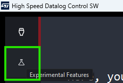Activate the DataToolkit feature by enabling the dedicated checkbox.
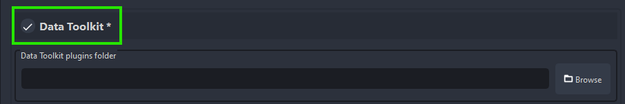Once the DataToolkit feature is enabled, the "Selected Plugin List" will appear empty.
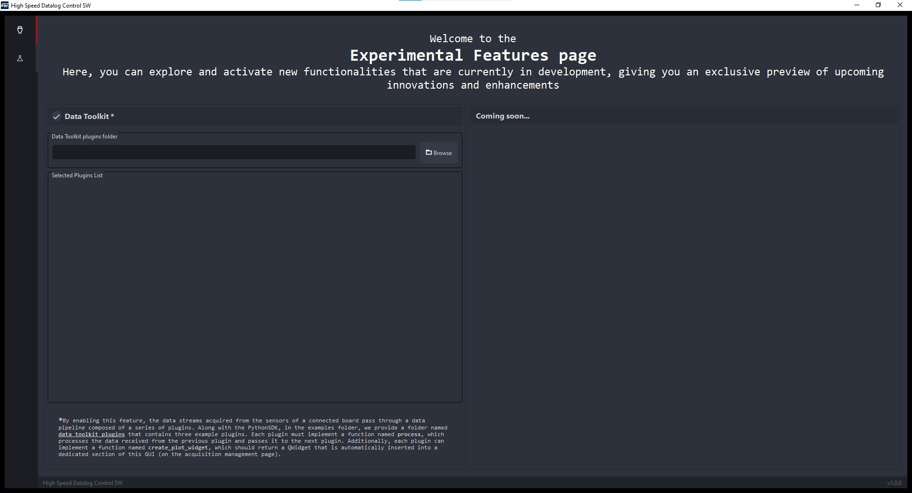Click "Browse" to select a folder containing one or more valid Plugin Python files.
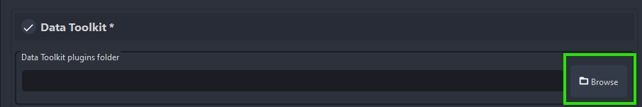Each Tutorial in this guide comes with a dedicated folder with the required plugin files. These folders are located in the HSDPython_SDK/data_toolkit_plugins/tutorials directory.
For example, to load the HelloWorldPlugin, select the HSDPython_SDK/data_toolkit_plugins/tutorials/simple/HelloWorld directory.
Once the folder is selected, the "Selected Plugin List" will display the loaded plugin like shown in the image below.

STWIN.box - SensorTile Wireless Industrial Node Development Kit
STWIN - SensorTile Wireless Industrial Node Development Kit
SensorTile.box PRO - Multi-sensors and wireless connectivity for any intelligent IoT node.
Discovery kit for IoT node with STM32U5 series
STM32 Nucleo-144 development board with STM32H7A3ZI MCU, SMPS, supports Arduino, ST Zio and morpho connectivity.
STM32 Nucleo-144 development board with STM32U575ZIT6Q MCU, SMPS, supports Arduino, ST Zio and morpho connectivity.
The DataToolkit tutorials are detailed guides designed to help you master the framework, regardless of whether you are a beginner or an expert.
Explore the following tutorials to get familiar with the DataToolkit framework.
This "Hello, World!" tutorial shows the basic structure of a plugin.
Connect multiple plugins together to form a process pipeline.
Shows how to create a GUI widget to plot your processed data.
Dive deeper into the DataToolkit framework with these advanced tutorials designed for experienced users.
Learn how to create a plugin that saves processed data into a CSV file.
Stay tuned for more advanced tutorials that will help you leverage the full potential of the DataToolkit framework.
The HelloWorld plugin is designed as an introductory example to help you get started with the DataToolkit framework. This tutorial demonstrates the basic structure and functionality of a plugin.
Before starting this tutorial, ensure that your system is configured correctly. Follow the instructions in the Download and Configure and How to configure the Plugins Pipeline sections.
From the DataToolkit GUI section, select the HelloWorld plugin folder located in the HSDPython_SDK/data_toolkit_plugins/tutorials/simple directory.
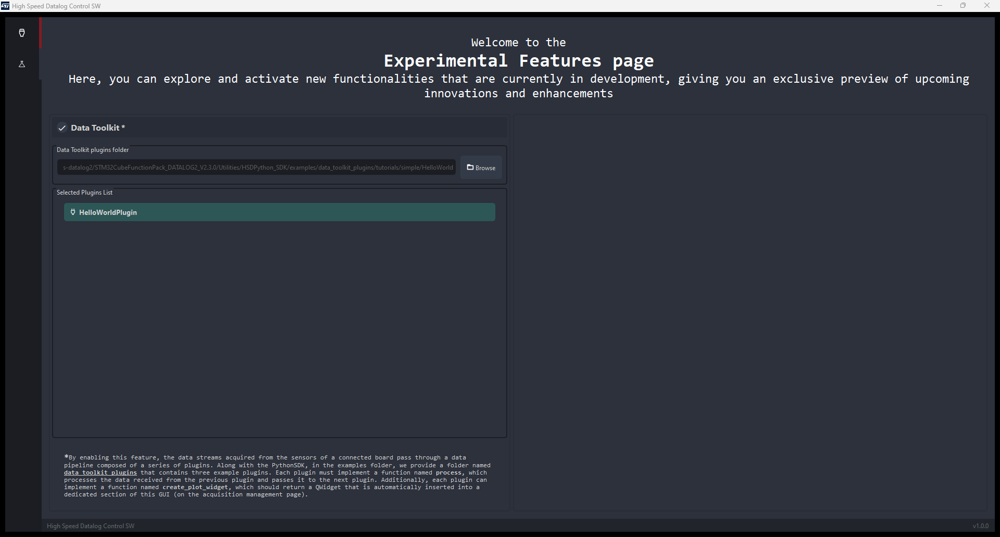Return to the connection page by clicking the plug button and connect your FP-SNS-DATALOG2-compatible board by clicking the Connect button. Enable the sensors you want to use by clicking the corresponding checkboxes. Their data will be streamed to the Datalog application and through the DataToolkit framework.
For this simple example we enabled only the IIS3DWB accelerometer sensor as shown in the image below (this is just an example to simplify the tutorial; you can enable any sensor you want and also more than one at the same time).
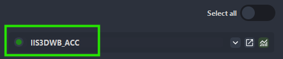Click Start Log to start the data acquisition process.
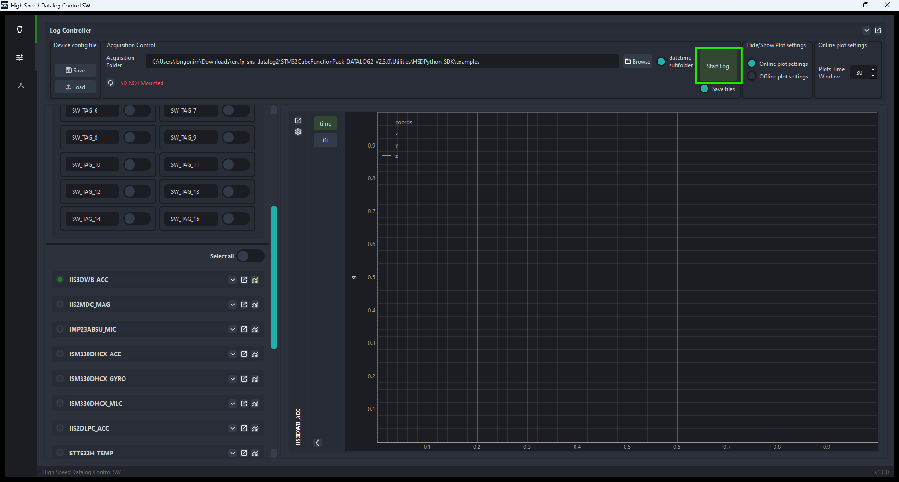IIS3DWB_ACC data will be streamed to the Datalog application as shown in the figure below.
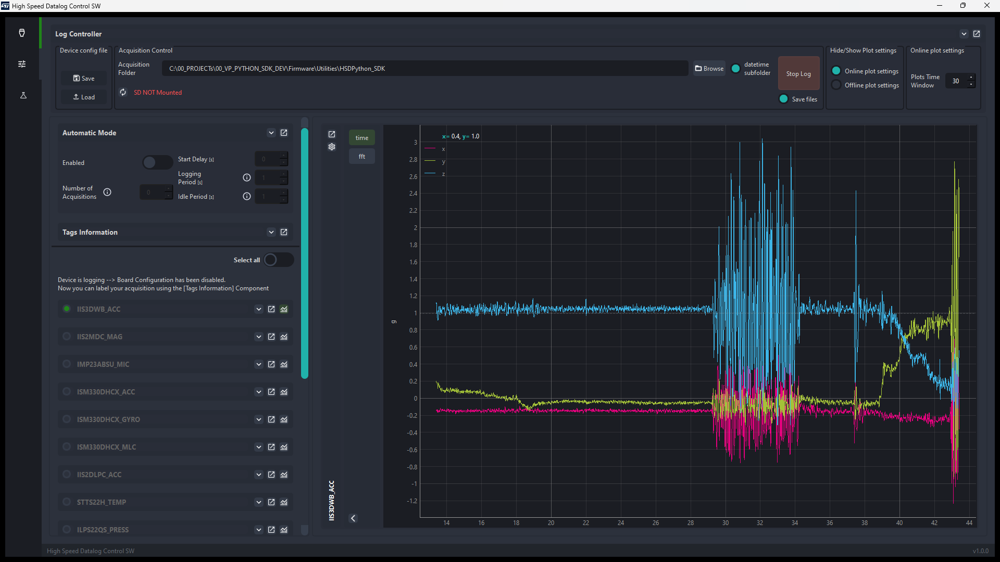At the same time, the data stream is routed to the DataToolkit Pipeline and processed by the HelloWorldPlugin plugin (since is the only plugin loaded).
Here is the code for the HelloWorldPlugin.py plugin:
from st_hsdatalog.HSD_datatoolkit.HSD_DataToolkit_Pipeline import HSD_Plugin
class PluginClass(HSD_Plugin):
def __init__(self):
super().__init__()
print("HelloWorldPlugin has been initialized!")
def process(self, data):
print("HelloWorldPlugin process method called")
print(f"---> Received data from: {data.comp_name}")
print(f"-----> Data: {data.data}")
print(f"-----> Timestamp: {data.timestamp}")
return data
def create_plot_widget(self):
print("HelloWorldPlugin create_plot_widget method called")
To see the HelloWorldPlugin in action, you can see the console output in the Datalog application as shown in the image below.
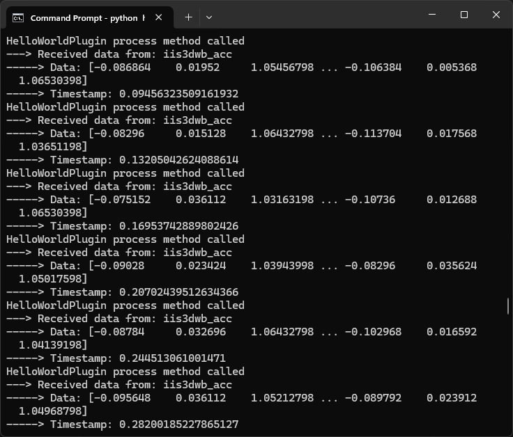As you can see, the process method is invoked automatically each time new IIS3DWB_ACC data are available.
The process method receives as input data, an instance of the HSD_DataToolkit_data class. Where the data attribute is a numpy array containing the IIS3DWB_ACC data.
Here is the detailed description of the data object received by the process method:
data.comp_name = "component_name" (string)
data.data = ([acc_x, acc_y, acc_z, acc_x, acc_y, acc_z, ...], dtype('float64'))
data.timestamp = <double_value>
Click Stop Log to stop the data acquisition process.
The tutorial is now complete. You have successfully run your first plugin with the DataToolkit framework. You can now close the Datalog application and explore more tutorials to further enhance your knowledge.
The Chained Plugins tutorial is designed to help you understand how to connect multiple plugins to form a process pipeline. This tutorial demonstrates the modularity and scalability of the DataToolkit framework by allowing users to split complex processes into different blocks. For example, a filtering phase followed by a control algorithm can be split into two plugins: Filter and Control Algorithm, which can be reused in the future like "Lego" blocks.
In this tutorial, we will use two plugins called FilterPlugin.py and ProcessPlugin.py to filter and process data from a IIS3DWB accelerometer sensor.
Before starting this tutorial, ensure that your system is configured correctly. Follow the instructions in the Download and Configure and How to configure the Plugins Pipeline sections.
From the DataToolkit GUI section, select the ChainedPlugins plugin folder located in the HSDPython_SDK/data_toolkit_plugins/tutorials/simple directory. The plugin folder contains two plugin called: FilterPlugin.py and ProcessPlugin.py.
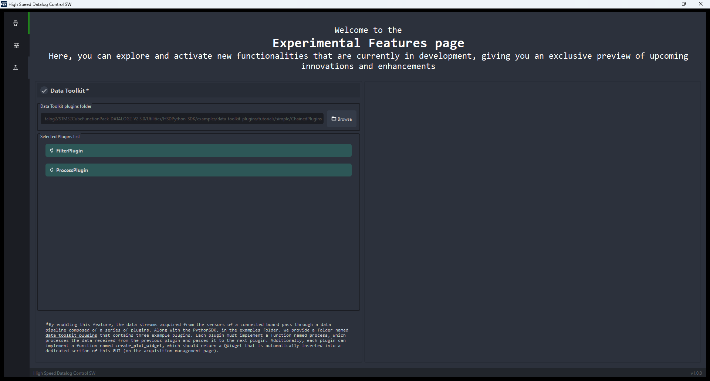Return to the connection page by clicking the plug button and connect your FP-SNS-DATALOG2-compatible board by clicking the Connect button. Then enable the IIS3DWB sensor by clicking its corresponding checkbox. IIS3DWB data will be streamed to the Datalog application and through the DataToolkit framework.
Click Start Log to start the data acquisition process.
IIS3DWB_ACC data will be streamed to the Datalog application as shown in the figure below.
Simultaneously, the same data is routed to the DataToolkit Pipeline for processing. The IIS3DWB sensor data will first be processed by the FilterPlugin, and its output will then be used as input for the subsequent ProcessPlugin.
Each time new IIS3DWB sensor data becomes available, it will be processed by the entire plugin pipeline before processing the next IIS3DWB sensor data.
Here is the code for the FilterPlugin.py plugin:
from st_hsdatalog.HSD_datatoolkit.HSD_DataToolkit_Pipeline import HSD_Plugin
import numpy as np
class PluginClass(HSD_Plugin):
def __init__(self):
super().__init__()
print("FilterPlugin has been initialized!")
def process(self, data):
if data.comp_name == "iis3dwb_acc":
# Extract the x, y, and z components of the accelerometer data
acc_x = data.data[0::3]
acc_y = data.data[1::3]
acc_z = data.data[2::3]
# Calculate the norm of the accelerometer data
acc_data_norm = np.sqrt(acc_x**2 + acc_y**2 + acc_z**2)
# Update the data with the calculated norm
data.data = acc_data_norm
return data
def create_plot_widget(self):
print("FilterPlugin create_plot_widget method called")
The FilterPlugin.py will receive IIS3DWB_ACC data as input and compute the norm of the three axes. This plugin is responsible for filtering the data before it is passed to the next stage.
Here is the code for the ProcessPlugin.py plugin:
from st_hsdatalog.HSD_GUI.HSD_DataToolkit_Pipeline import HSD_Plugin
import numpy as np
class PluginClass(HSD_Plugin):
def __init__(self, components_status):
super().__init__(components_status)
self.control_thr = 1.7
print("ProcessPlugin has been initialized!")
def process(self, data):
if data.comp_name == "iis3dwb_acc":
if np.any(data.data >= self.control_thr):
print("Warning data above threshold !!")
return data
def create_plot_widget(self):
print("ProcessPlugin create_plot_widget method called")
The ProcessPlugin.py will implement a simple control algorithm that evaluates if the input is above a control threshold and prints "Warning data above threshold !!" if it is.
To see these plugins in action, you can view the console output in the Datalog application as shown in the image below. Move your board; each time the filtered data is above the threshold, the message "Warning data above threshold !!" will be displayed in the console.
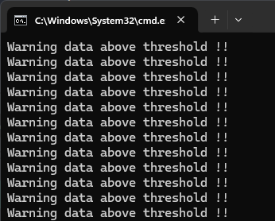Click Stop Log to stop the data acquisition process.
The tutorial is now complete. You have successfully run two chained plugins forming a data processing pipeline. You can now close the Datalog application and explore more tutorials to further enhance your knowledge.
This tutorial is an introductory example designed to guide you through the process of creating a simple graphical user interface (GUI) to visualize the data generated by your plugins.
In this tutorial, you will compute the norm of the IIS3DWB accelerometer data and plot the result on a graph.
Before starting, ensure that your system is configured correctly. Follow the instructions in the Download and Configure and How to configure the Plugins Pipeline sections.
From the DataToolkit GUI section, select the PluginWithGUI plugin folder located in the HSDPython_SDK/data_toolkit_plugins/tutorials/simple directory.

Return to the connection page by clicking the plug button and connect your FP-SNS-DATALOG2-compatible board by clicking the Connect button. Then enable the IIS3DWB sensor by clicking its corresponding checkbox. IIS3DWB data will be streamed to the Datalog application and through the DataToolkit framework.
As you can see in the figure below, a new graph for the plugin data has been added on the right section of the Datalog application.
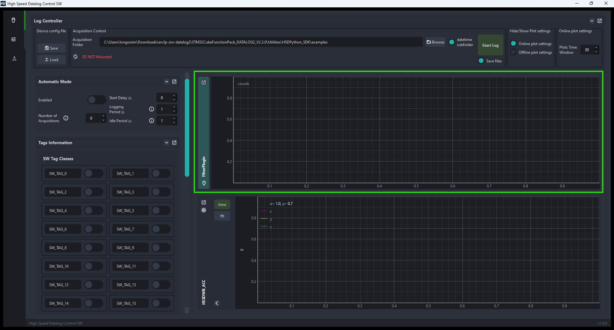Click Start Log to start the data acquisition process.
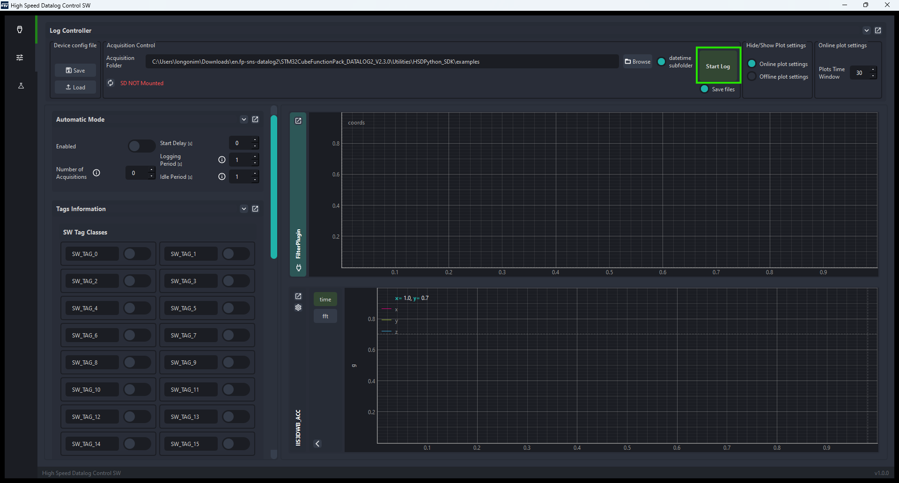IIS3DWB_ACC data will be streamed to the Datalog application and the plugin process data will be displayed by the new added graph, as shown in the figure below.
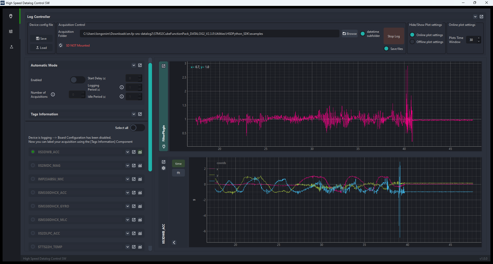Here is the code for the FilterPlugin_GUI.py plugin:
from st_hsdatalog.HSD_datatoolkit.HSD_DataToolkit_Pipeline import HSD_Plugin
from st_dtdl_gui.Widgets.Plots.PluginPlotWidget import PluginPlotWidget, PluginPlotType
import numpy as np
class PluginClass(HSD_Plugin):
def __init__(self):
super().__init__()
print("FilterPlugin has been initialized!")
def process(self, data):
if data.comp_name == "iis3dwb_acc":
# Extract the x, y, and z components of the accelerometer data
acc_x = data.data[0::3]
acc_y = data.data[1::3]
acc_z = data.data[2::3]
# Calculate the norm of the accelerometer data
acc_data_norm = np.sqrt(acc_x**2 + acc_y**2 + acc_z**2)
# Add data to the Plot Widget
self.plot_widget.add_data([acc_data_norm])
# Update the data with the calculated norm
data.data = acc_data_norm
return data
def create_plot_widget(self):
print("FilterPlugin create_plot_widget method called")
self.plot_widget = PluginPlotWidget.create_plot("FilterPlugin", PluginPlotType.LINE, dimension=1)
return self.plot_widget
This plugin compute the norm of the IIS3DWB accelerometer data and plot the result on the dedicated graph.
In order to plot the plugin data user needs to:
Import the necessary modules
from st_hsdatalog.HSD_GUI.HSD_DataToolkit_Pipeline import PluginPlotWidget, PluginPlotType
Instantiate the Plot Widget
def create_plot_widget(self):
print("FilterPlugin create_plot_widget method called")
self.plot_widget = PluginPlotWidget.create_plot("FilterPlugin", PluginPlotType.LINE, dimension=1)
return self.plot_widget
The PluginPlotWidget.create_plot() method allows you to create a Plot Widget based on the specified parameters. Here is the method declaration and how to use it:
class PluginPlotWidget:
@staticmethod
def create_plot(plot_name, plot_type: PluginPlotType, dimension, unit=""):
"""
Create a plot widget based on the plot parameters.
@param plot_name: The name of the plot.
@type plot_name: str
@param plot_type: The type of the plot. Must be an instance of PluginPlotType.
@type plot_type: PluginPlotType
@param dimension: The dimensions of the plot.
@type dimension: Any (Specify the exact type if known)
@param unit: The unit of measurement for the plot dimensions. Default is an empty string.
@type unit: str, optional
@return: A plot widget instance if the plot type is valid, otherwise None.
@rtype: PlotLinesWidget or None
"""
Send the plugin processed data to the Plot Widget by calling:
# Add data to the Plot Widget
self.plot_widget.add_data([acc_data_norm])
To see the FilterPlugin_GUI in action, you can view the signal plotted in the Datalog application as shown in the image above. The graph will display the norm value of the IIS3DWB accelerometer data, allowing you to visualize the processed data in real-time. This provides a clear and immediate way to verify that the plugin is functioning correctly and that the data is being processed and displayed as expected.
Click Stop Log to stop the data acquisition process.
The tutorial is now complete. You have successfully run a plugin with a graphical user interface to visualize the processed data. You can now close the Datalog application and explore more tutorials to further enhance your knowledge.
The CSV data Plugin tutorial demonstrates how to create a plugin that saves processed data into a CSV file.
Before starting this tutorial, ensure that your system is configured correctly. Follow the instructions in the Download and Configure and How to configure the Plugins Pipeline sections.
From the DataToolkit GUI section, select the CSVdataSave plugin folder located in the HSDPython_SDK/data_toolkit_plugins/tutorials/advanced directory.
Selected Plugins list should look like this:
Return to the connection page by clicking the plug button and connect your FP-SNS-DATALOG2-compatible board by clicking the Connect button. Enable the sensors you want to use by clicking the corresponding checkboxes. Their data will be streamed to the Datalog application and through the DataToolkit framework.
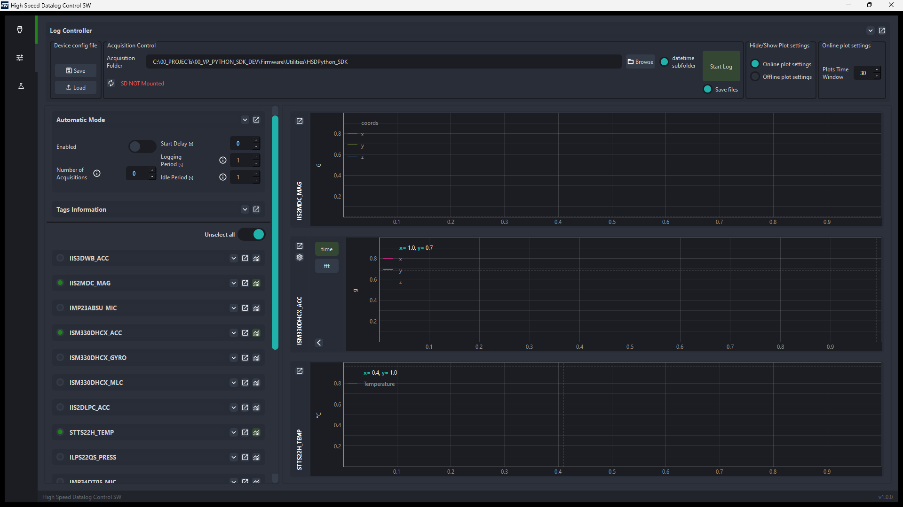Click Start Log to start the data acquisition process.
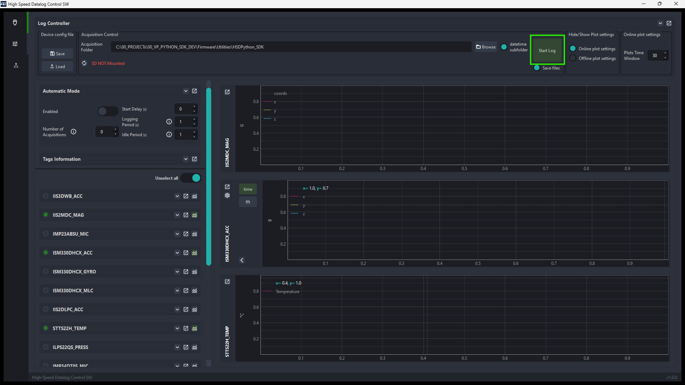Selected sensor data will be streamed to the Datalog application as shown in the figure below.
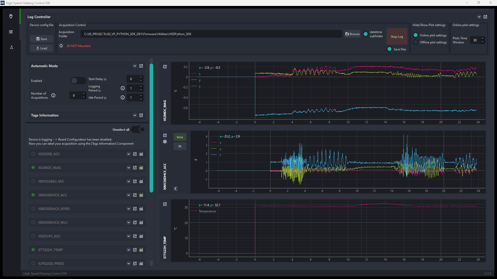At the same time, the data stream is routed to the DataToolkit Pipeline and processed by the CSVDataSavePlugin plugin (since is the only plugin loaded).
Here is the code for the CSVDataSavePlugin.py plugin:
import os
import threading
import queue
import numpy as np
import pandas as pd
from datetime import datetime
from st_hsdatalog.HSD_datatoolkit.HSD_DataToolkit_Pipeline import HSD_DataToolkit_data, HSD_Plugin
OUTPUT_DIR = os.path.dirname(os.path.abspath(__file__))
class PluginClass(HSD_Plugin):
def __init__(self):
super().__init__()
print("CSVDataSavePlugin has been initialized!")
self.output_dir = OUTPUT_DIR
self.components_files = {}
self.data_queues = {}
self.writer_threads = {}
if not os.path.exists(self.output_dir):
os.makedirs(self.output_dir)
# Method to recreate timestamps based on the last timestamp, number of samples, and output data rate (odr)
def _recreate_timestamps(self, last_timestamp, num_samples, odr):
interval = 1.0 / odr
timestamps = [last_timestamp - (num_samples - 1 - i) * interval for i in range(num_samples)]
return timestamps
# Initialize the CSV file with headers
def _initialize_csv(self, file_name, headers):
print("Initializing CSV file")
df = pd.DataFrame(columns=headers)
df.to_csv(file_name, mode='w', header=True, index=False)
# Function to save a batch of data to CSV
def _save_batch_to_csv(self, data_batch, file_name):
# Ensure data_batch is a 2D array
data_batch_2d = np.vstack(data_batch)
df = pd.DataFrame(data_batch_2d)
df.to_csv(file_name, mode='a', header=False, index=False)
# Worker function to write data from the queue to the CSV file
def _writer_worker(self, data_queue, file_name, batch_size):
batch = []
while True:
data_chunk = data_queue.get()
if data_chunk is None:
if batch:
self._save_batch_to_csv(batch, file_name)
break
batch.append(data_chunk)
if len(batch) >= batch_size:
self._save_batch_to_csv(batch, file_name)
batch = []
data_queue.task_done()
# Process incoming data and add it to the queue
def process(self, data:HSD_DataToolkit_data):
component_name = data.comp_name
if component_name not in self.components_status:
print(f"Component {component_name} not found in components_status")
return
odr = self.components_status[component_name].get('odr', 1)
dim = self.components_status[component_name].get('dim', 1)
num_samples = len(data.data) // dim
timestamps = self._recreate_timestamps(data.timestamp, num_samples, odr)
axis_data = np.array([data.data[j::dim] for j in range(dim)])
combined_data = np.column_stack((timestamps, axis_data.T))
self.data_queues[component_name].put(combined_data)
# Create a plot widget (currently just a placeholder)
def create_plot_widget(self):
print("CSVDataSavePlugin create_plot_widget method called")
# Start logging callback, initializes CSV files and writer threads for each component and starts the writer threads
def start_log_cb(self):
current_time = datetime.now().strftime("%Y%m%d_%H_%M_%S")
for component_name, status in self.components_status.items():
if status.get('enable', False):
csv_file_path = os.path.join(self.output_dir, f"{component_name}_{current_time}.csv")
self.components_files[component_name] = csv_file_path
header = ["Time"]
header.extend([f"Data_axis_{i}" for i in range(status.get('dim', 1))])
batch_size = 5 # Number of chunks per batch
self.data_queues[component_name] = queue.Queue()
# Initialize the CSV file
self._initialize_csv(csv_file_path, header)
writer_thread = threading.Thread(target=self._writer_worker, args=(self.data_queues[component_name], csv_file_path, batch_size))
self.writer_threads[component_name] = writer_thread
self.writer_threads[component_name].start()
# Stop logging callback, stops the writer threads for each component and joins them to the main thread
def stop_log_cb(self):
for component_name in self.components_files:
self.data_queues[component_name].put(None)
self.writer_threads[component_name].join()
Once the acquisition is started, for each sensor enabled, the plugin will create a CSV file with the sensor name and the current timestamp as the file name. By default the CSV file will be saved in the same directory as the plugin file. Change the OUTPUT_DIR variable to save the CSV file in a different directory.
The plugin then creates a header for each CSV file with a column named Time to store the timestamps and a column for each sensor axis named Data_axis_i (where i is the axis number), to store the sensor data. sequentially, the plugin will start a writer thread for each sensor to write the data to the CSV file in batches of 5 samples.
At each process function call, the plugin will calculate the timestamps for each sample based on the last timestamp received and the ODR of the sensor. Then once timestamp array is created, the plugin will combine the timestamps with the data and add it to a dedicated queue for each sensor.
The file writing process is done in a separate thread to avoid blocking the main thread. Each writer thread will write the data to the CSV file in batches of 5 samples.
When the acquisition is stopped, the plugin will signal all writer threads to finish writing the data and close the CSV files.
To see the CSVDataSavePlugin in action, you can inspect the CSV files created in the selected OUTPUT_DIR directory. Each file will contain the timestamp and the sensor data for the enabled sensors.
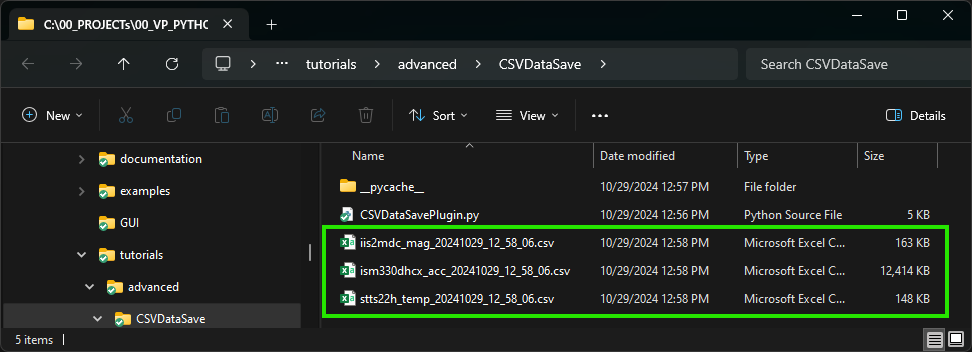Click Stop Log to stop the data acquisition process.
The tutorial is now complete. You have successfully saved your processed data into a CSV file using the DataToolkit framework.
The images above display the content of the CSV files generated by the plugin, visualized using matplotlib.
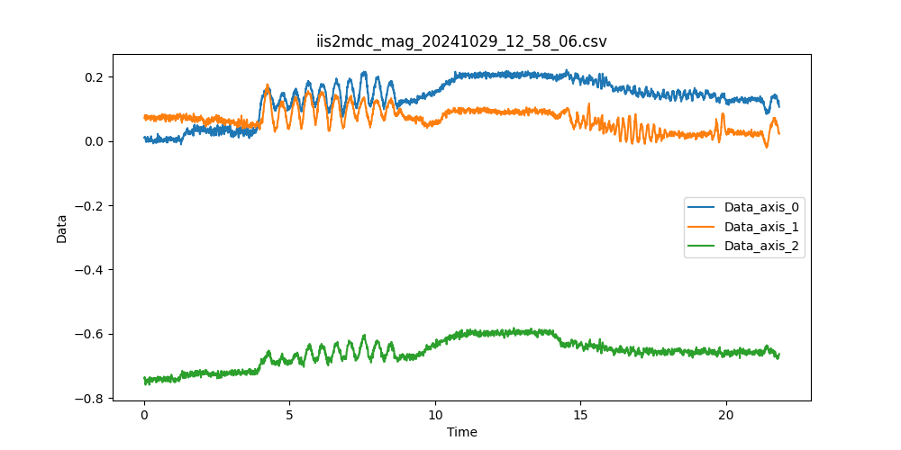 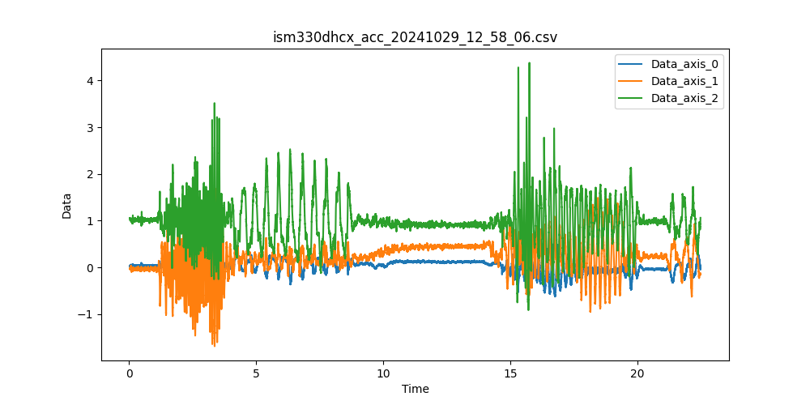 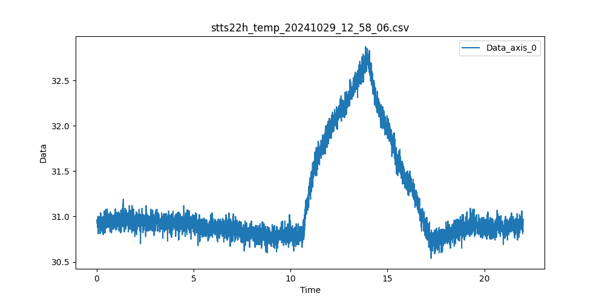To verify the accuracy* of the data saved in the CSV files, you can compare these plots with the data displayed in the Datalog application.
* Data live plotted could be sub-sampled to reduce the number of points and improve the visualization, the CSV files instead will contain all the data points. This means that the comparison is not perfect but should give you a good idea of the correctness of the data saved.
You can now close the Datalog application and explore more tutorials to further enhance your knowledge.